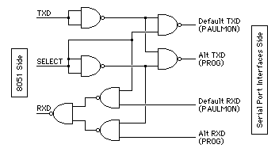

PAULMON2
PAULMON2
Reclaiming the Serial Port
Many applications require the 8051's built-in UART, but PAULMON2
uses the UART for communication. One approach to developing
programs which require the serial port is to build a simple
circuit which routes the TXD and RXD signals to one interface
circuit when PAULMON is in use, and to another interface circuit
when PAUMON is not is use (when the program under development is
running).
Here is one simple circuit that accomplishes this using 7 NAND gates.
The 74HC00, 74LS00, 7400, CD4011 or other similar chips should work
for this application. Be sure to check the
pinouts before wiring
|

|
|
Figure 1: Simple Serial Port Mux Using NAND Gates
|
The SELECT line should be connected to a port pin on the
8051. When the 8051 is reset, the port pins default to a high
state, which causes the circuit to route the TXD/RXD signals to
the serial port used for development with PAULMON. The first line
code in the application program (downloaded to RAM using PAULMON)
should clear the SELECT pin, so the the TXD/RXD signals are
routed to the serial port that the program needs to use. If the
processor is RESET (returning the system to PAULMON), the port pin
will return high when the 8051 resets, and PAULMON will be ready
for another code download, memory editing, etc.
A similar circuit can be constructed using a DPDT relay (don't
forget a transistor to drive the coil), with pullup resistors
on the various signal lines so that they will remain at a logic
high when they are physically disconnected by the relay contacts.
This simple technique does require extra circuitry on the development
board, and one extra port pin, which won't be used in the final
application. However, it does allow the use of PAULMON to develop the
code and once the downloaded program is running with the SELECT
line low, the program need not know that PAULMON uses the other
serial port.
PAULMON2 Documentation, Paul Stoffregen
http://www.ece.orst.edu/~paul/8051-goodies/pm2_docs/serial-port.html
Last updated:
Status: Finished
Suggestions, comments, bug reports???
<paul@ece.orst.edu>
Return to PAULMON2 Documentation, Table of Contents